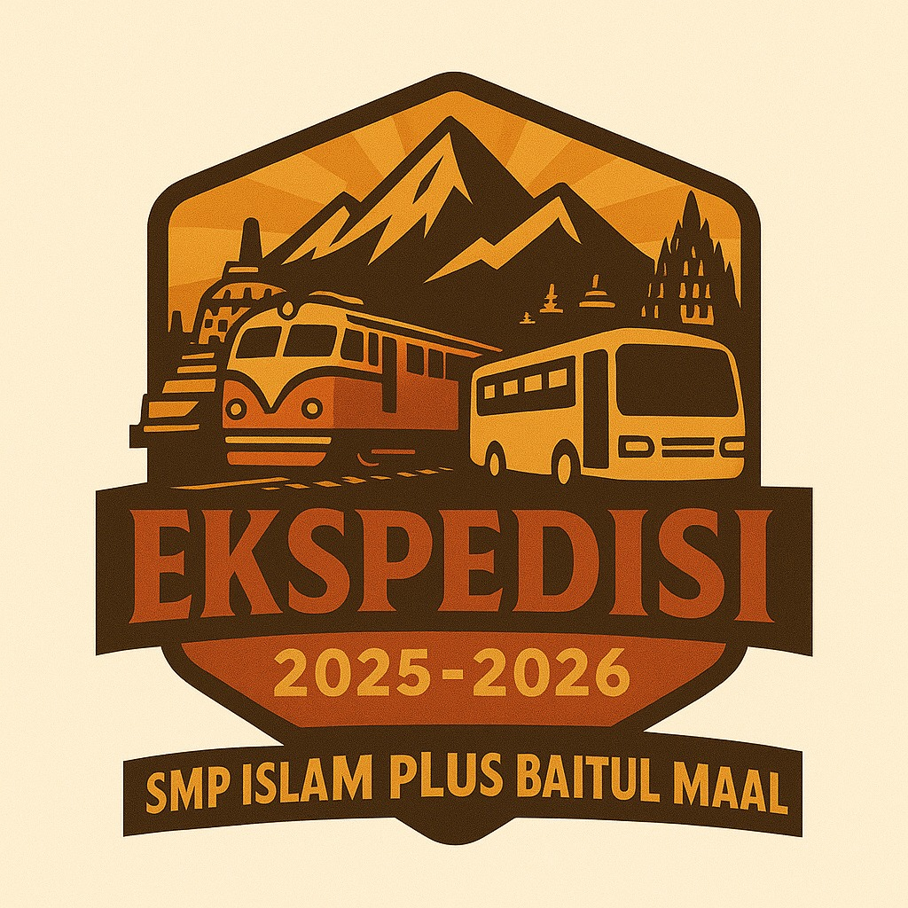

EKSPEDISI RT 3
Tema Ekspedisi
"Jelajahi Sejarah, Mengasah Literasi, Bangun Interaksi dan Kolaborasi"
Rundown Kegiatan Ekspedisi
Hari Keberangkatan
Pelepasan & Keberangkatan
- Pelepasan Ekspedisi dan keberangkatan dari Stasiun Senen menuju Malang Kota.
Tiba di Malang
Eksplorasi & Pembukaan
- Tiba di Stasiun Malang.
- Eksplorasi Kampung Warna Warni & Tridi.
- Eksplorasi Museum Brawijaya.
- Pembukaan di Balai Desa.
- Pengenalan lokasi & sapa masyarakat.
- Games & Edukasi anak-anak TPA.
- Diskusi & Refleksi Kelompok.
Hari Pengabdian
Penyuluhan & Interaksi
- Penyuluhan 7+1 Kebiasaan Anak Indonesia Hebat.
- Observasi & sharing profesi community.
- Kelas Inspirasi Desa: kerajinan tangan gantungan kunci bersama anak-anak.
- Games & Edukasi anak-anak SD.
- BPJS (Bersih-bersih perkampungan jadi sehat).
- Diskusi & Refleksi Kelompok.
Penutupan & Kepulangan
Eksplorasi & Perjalanan Pulang
- Closing.
- Eksplorasi Perkebunan Apel.
- Zoologi Frater Vianney & Museum Angkut Malang.
- Perjalanan pulang ke Jakarta (Stasiun Malang – Senen).
Tiba di Rumah
Tiba di Tangerang Selatan
- Tiba di SMP Islam Plus Baitul Maal...
Profil Anggota RT 3
Klik kartu untuk melihat detail anggota
Chairul Ichsan, S.Pd
Suheyl Fatkhurrahman
Syamil Muhammad Aulia
Abdurrahman
Arkoun Azra Putra
Krishna Raditya Wahhab
Syauqi Nukman Abdurrahman
Muhammad Rafky Raffasya
Akhtar Rafif Khairullah
Wawasan & Sejarah Lokasi Kunjungan
Memahami latar belakang tempat yang kami kunjungi
Museum Angkut
Museum ini terletak di Kota Batu, Malang. Dibuka pada 9 Maret 2014 oleh Jawa Timur Park Group. Isinya koleksi kendaraan dari berbagai zaman dan negara, mulai dari mobil klasik, kendaraan perang, sampai transportasi modern. Tujuannya mengenalkan sejarah transportasi dunia dan perkembangannya. Museum ini juga menampilkan zona bertema seperti Hollywood, Eropa, dan Indonesia.

Kampung Wisata Jodipan (Kampung Warna-Warni)
Siapa sangka, tempat wisata ikonik ini dulunya Dulunya kawasan kumuh di tepi Sungai Brantas, kini jadi kampung wisata berwarna-warni. Diresmikan tahun 2016 setelah program kerja sama antara mahasiswa Universitas Muhammadiyah Malang dan warga setempat. Dinding dan atap rumah dicat beragam warna cerah. Tujuannya memperbaiki citra lingkungan dan menarik wisatawan. Sekarang jadi salah satu ikon wisata Kota Malang.
Museum Brawijaya
Didirikan pada tahun 1968 di Malang Terletak di Jalan Ijen, Malang, didirikan tahun 1968 oleh Kodam V/Brawijaya. Museum ini menyimpan koleksi peninggalan sejarah perjuangan TNI dan rakyat Jawa Timur sejak masa penjajahan hingga kemerdekaan. Koleksi terkenal di sini antara lain gerbong “Death Wagon” dari Bondowoso, senjata-senjata lama, dan dokumen perjuangan. Fungsinya sebagai tempat edukasi sejarah militer Indonesia.
Desa Pujon Lor
Desa ini berada di Kecamatan Pujon, Kabupaten Malang, di ketinggian sekitar 1.200 meter di atas permukaan laut. Awalnya Pujon Lor dikenal sebagai daerah pertanian dan peternakan karena tanahnya subur dan berhawa sejuk. Sejak dulu, masyarakatnya hidup dari bercocok tanam, terutama sayur mayur dan hasil bumi. Pada tahun 2000-an, desa ini mulai mengembangkan potensi wisata alam dan pertanian. Warga bersama pemerintah desa berinisiatif membuat wisata edukatif dan rekreasi berbasis masyarakat. Hasilnya, lahirlah tempat seperti Café Sawah dan Wisata Desa Pujon Kidul yang ramai dikunjungi wisatawan. Kini, Desa Pujon Lor menjadi contoh sukses desa wisata di Malang yang bisa menyeimbangkan pertanian, budaya lokal, dan pariwisata modern.
Dokumentasi Ekspedisi

Day 1
Keterangan
hari pertama kemana ajaa